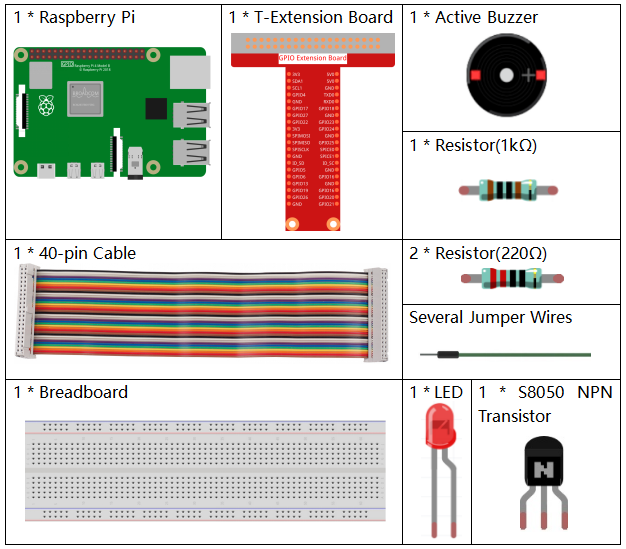

Nota
¡Hola! Bienvenidos a la comunidad de entusiastas de SunFounder para Raspberry Pi, Arduino y ESP32 en Facebook. Profundicen en el mundo de Raspberry Pi, Arduino y ESP32 junto con otros entusiastas.
¿Por qué unirse?
Soporte de expertos: Resuelve problemas post-venta y desafíos técnicos con la ayuda de nuestra comunidad y equipo.
Aprende y comparte: Intercambia consejos y tutoriales para mejorar tus habilidades.
Previews exclusivos: Acceso anticipado a anuncios de nuevos productos y adelantos exclusivos.
Descuentos especiales: Disfruta de descuentos exclusivos en nuestros productos más recientes.
Promociones y sorteos festivos: Participa en promociones y sorteos en días festivos.
üëâ ¬øListo para explorar y crear con nosotros? Haz clic en [Aqu√≠] y únete hoy mismo.
3.1.11 Generador de Código Morse
Introducción
En este proyecto, crearemos un generador de código Morse, donde puedes escribir una serie de letras en inglés en el Raspberry Pi y estas aparecerán como código Morse.
Componentes Necesarios
Para este proyecto, necesitamos los siguientes componentes.
{kind=link}
Diagrama de Conexión
T-Board Name |
physical |
wiringPi |
BCM |
GPIO17 |
Pin 11 |
0 |
17 |
GPIO22 |
Pin 15 |
3 |
22 |

Procedimientos Experimentales
Paso 1: Monta el circuito. (Presta atención a las polaridades del zumbador: la etiqueta + indica el polo positivo, y el otro es el negativo).

Paso 2: Abre el archivo de código.
cd ~/davinci-kit-for-raspberry-pi/python-pi5
Paso 3: Ejecuta el programa.
sudo python3 3.1.11_MorseCodeGenerator.py
Una vez que el programa se esté ejecutando, escribe una serie de caracteres, y el zumbador junto con el LED emitirán las señales correspondientes en código Morse.
Advertencia
Si aparece el mensaje de error RuntimeError: Cannot determine SOC peripheral base address, consulta Si gpiozero no funciona.
Código
#!/usr/bin/env python3
from gpiozero import Buzzer, LED
import time
# Inicializa el zumbador y el LED en los pines GPIO
BeepPin = Buzzer(22)
ALedPin = LED(17)
# Representación de caracteres en código Morse
MORSECODE = {
'A': '01', 'B': '1000', 'C': '1010', 'D': '100', 'E': '0', 'F': '0010', 'G': '110',
'H': '0000', 'I': '00', 'J': '0111', 'K': '101', 'L': '0100', 'M': '11', 'N': '10',
'O': '111', 'P': '0110', 'Q': '1101', 'R': '010', 'S': '000', 'T': '1',
'U': '001', 'V': '0001', 'W': '011', 'X': '1001', 'Y': '1011', 'Z': '1100',
'1': '01111', '2': '00111', '3': '00011', '4': '00001', '5': '00000',
'6': '10000', '7': '11000', '8': '11100', '9': '11110', '0': '11111',
'?': '001100', '/': '10010', ',': '110011', '.': '010101', ';': '101010',
'!': '101011', '@': '011010', ':': '111000',
}
def on():
""" Turn on the buzzer and LED. """
BeepPin.on()
ALedPin.on()
def off():
""" Turn off the buzzer and LED. """
BeepPin.off()
ALedPin.off()
def beep(dt): # dt es el tiempo de retardo.
"""
Produce a beep sound and LED flash for the specified duration.
:param dt: Duration for the beep and flash.
"""
on()
time.sleep(dt)
off()
time.sleep(dt)
def morsecode(code):
"""
Convert the input code into Morse code and signal it using the buzzer and LED.
:param code: The text to be converted to Morse code.
"""
pause = 0.25
for letter in code:
for tap in MORSECODE[letter]:
if tap == '0':
beep(pause / 2) # Pitido corto para un punto
if tap == '1':
beep(pause) # Pitido largo para una raya
time.sleep(pause) # Pausa entre letras
def destroy():
""" Clean up resources on script termination. """
print("")
BeepPin.off()
ALedPin.off()
try:
while True:
code = input("Please input the messenger:")
code = code.upper() # Convierte a mayúsculas para la búsqueda en código Morse
print(code)
morsecode(code)
except KeyboardInterrupt:
destroy()
Explicación del Código
Este código importa las clases Buzzer y LED de la biblioteca gpiozero, esenciales para controlar los dispositivos GPIO en la Raspberry Pi.
#!/usr/bin/env python3 from gpiozero import Buzzer, LED import time
Inicializa el zumbador en el pin GPIO 22 y el LED en el pin GPIO 17, facilitando el control de estos componentes.
# Inicializa el zumbador y el LED en los pines GPIO BeepPin = Buzzer(22) ALedPin = LED(17)
Define la estructura
MORSECODE, un diccionario con representaciones de código Morse para las letras de la A a la Z, números del 0 al 9 y símbolos como “?”, “/”, “:”, “,”, “.”, “;”, “!”, “@”, donde0indica un punto y1indica una raya.# Representación de caracteres en código Morse MORSECODE = { 'A': '01', 'B': '1000', 'C': '1010', 'D': '100', 'E': '0', 'F': '0010', 'G': '110', 'H': '0000', 'I': '00', 'J': '0111', 'K': '101', 'L': '0100', 'M': '11', 'N': '10', 'O': '111', 'P': '0110', 'Q': '1101', 'R': '010', 'S': '000', 'T': '1', 'U': '001', 'V': '0001', 'W': '011', 'X': '1001', 'Y': '1011', 'Z': '1100', '1': '01111', '2': '00111', '3': '00011', '4': '00001', '5': '00000', '6': '10000', '7': '11000', '8': '11100', '9': '11110', '0': '11111', '?': '001100', '/': '10010', ',': '110011', '.': '010101', ';': '101010', '!': '101011', '@': '011010', ':': '111000', }
La función
on()enciende el zumbador y el LED. La funciónoff()se utiliza para apagarlos.def on(): """ Turn on the buzzer and LED. """ BeepPin.on() ALedPin.on() def off(): """ Turn off the buzzer and LED. """ BeepPin.off() ALedPin.off()
Define una función
beep()para hacer que el zumbador y el LED emitan sonidos y parpadeen en un intervalo de tiempo definido pordt.def beep(dt): # dt es el tiempo de retardo. """ Produce a beep sound and LED flash for the specified duration. :param dt: Duration for the beep and flash. """ on() time.sleep(dt) off() time.sleep(dt)
La función
morsecode()procesa el código Morse de los caracteres ingresados, haciendo que los “1” mantengan el sonido o luz encendidos y los “0” emitan sonidos o luces breves. Por ejemplo, si se ingresa “SOS”, se generará una señal con tres pitidos cortos, tres largos y luego tres cortos: “ · · · - - - · · · ”.def morsecode(code): """ Convert the input code into Morse code and signal it using the buzzer and LED. :param code: The text to be converted to Morse code. """ pause = 0.25 for letter in code: for tap in MORSECODE[letter]: if tap == '0': beep(pause / 2) # Pitido corto para un punto if tap == '1': beep(pause) # Pitido largo para una raya time.sleep(pause) # Pausa entre letras
Define una función llamada
destroyque apaga tanto el zumbador como el LED. Esta función se debe llamar al finalizar el script para asegurar que los pines GPIO no queden activos.def destroy(): """ Clean up resources on script termination. """ print("") BeepPin.off() ALedPin.off()
Al escribir los caracteres en el teclado,
upper()convierte las letras ingresadas a mayúsculas para su búsqueda en código Morse. Luegoprintf()muestra el texto claro en pantalla, y la funciónmorsecod()hace que el zumbador y el LED emitan el código Morse.try: while True: code = input("Please input the messenger:") code = code.upper() # Convierte a mayúsculas para la búsqueda en código Morse print(code) morsecode(code) except KeyboardInterrupt: destroy()